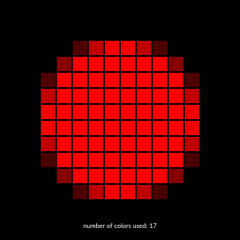
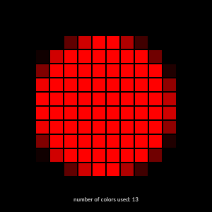

Perfect pixels and anti-aliasing
Anti-aliasing
The process of converting precise graphic shapes to a grid of pixels is automatically performed by Luxor when you save the drawing as a PNG file. If you make an SVG or PDF drawing, this process is carried out at a later stage, by the application you use to view or display the file.
It's usually better to defer this conversion as long as possible. Of course, eventually - unless you're using a pen plotter or laser cutter - your smooth outlines will have to be converted ("rasterized") to a grid of colored pixels for their final journey to the analogue world.
The conversion to PNG includes "anti-aliasing", which gradually changes the colors of pixels along a boundary so as to avoid the grid-like "staircase" effect. You can, to some extent, adjust the amount of anti-aliasing used when you make drawings in Luxor.
The setantialias function lets you specify the anti-aliasing amount as an integer constant between 0 and 6 to be used for rendering subsequent paths. The Cairo documentation describes the different values as follows:
| Value | Name | Description |
|---|---|---|
| 0 | CAIRO_ANTIALIAS_DEFAULT | Use the default anti-aliasing for the subsystem and target device |
| 1 | CAIRO_ANTIALIAS_NONE | Use a bilevel alpha mask |
| 2 | CAIRO_ANTIALIAS_GRAY | Perform single-color anti-aliasing (using shades of gray for black text on a white background, for example) |
| 3 | CAIRO_ANTIALIAS_SUBPIXEL | Perform anti-aliasing by taking advantage of the order of subpixel elements on devices such as LCD panels |
| 4 | CAIRO_ANTIALIAS_FAST | Hint that the backend should perform some anti-aliasing but prefer speed over quality |
| 5 | CAIRO_ANTIALIAS_GOOD | The backend should balance quality against performance |
| 6 | CAIRO_ANTIALIAS_BEST | Hint that the backend should render at the highest quality, sacrificing speed if necessary |
To show the anti-aliasing in action, the following code generates a red circle:
Drawing(20, 20, :image)
setantialias(0)
origin()
setcolor("red")
circle(Point(0, 0), 5, :fill)
mat = image_as_matrix()
finish()This matrix is now redrawn larger to show the effects of anti-aliasing better. Here's the default anti-aliasing value of 0:
and you can see that Luxor used 18 different shades of red to add some smoothness to this circle.
Here’s the result of the bilevel mask or “none” setting (setantialias(1)):
Here Luxor used just two colors to draw the circle.
The other values produce the same effects as the default (0), apart from 4 ("speed over quality"):
which uses 12 rather than 16 colors.
The anti-aliasing process can vary according to the OS and device you're using. The Cairo documentation stresses this more than once:
The value is a hint, and a particular backend may or may not support a particular value. [...] The values make no guarantee on how the backend will perform its rasterisation (if it even rasterises!) [...] The interpretation of
CAIRO_ANTIALIAS_DEFAULTis left entirely up to the backend [...]
Text
The anti-aliasing described above does not apply to text.
Text rendering is much more platform-dependent than graphics; Windows, MacOS, and Linux all have their own methods for rendering and rasterizing fonts, and currently there is no interface to the underlying font rendering APIs in Luxor.
Consider the following code, which makes an image of the letter "a" and redraws it larger:
using Luxor
function make_matrix()
Drawing(40, 40, :image)
background(1, 1, 1, 1)
setantialias(0)
origin()
setcolor(0, 0, 0, 1)
fontsize(40)
text("a", halign=:center, valign=:middle)
matrix = image_as_matrix()
finish()
return matrix
end
function draw()
matrix = make_matrix()
@png begin
background(0, 0, 0, 1)
table = Table(size(matrix)..., (15, 15))
for i in CartesianIndices(matrix)
r, c = Tuple(i)
setcolor(matrix[r, c])
box(table, r, c, :fillstroke)
end
end 400 400 "alias-test.png"
endThe output varies depending on the computer, operating system, and rendering settings.
Here’s the MacOS standard rendering:

Here’s Linux Gnome’s standard anti-aliasing:
On Windows systems, and on some Linux desktops, text can be displayed using a subpixel rendering process, which switches the red, green, and blue components of pixels on or off where they meet the edges of text in an attempt to provide a “smoother” appearance.
Here’s Linux KDE RGB anti-aliasing:

Windows Cleartype anti-aliasing:

In addition, Windows and some Linux systems use font hinting, a process in which the outlines of text glyphs are shifted so as to align better on the rectangular grid of pixels.
If you want text to be rendered precisely (and in a specified color) it might be worth investigating Luxor’s textoutlines function, which converts text to vector-based outlines. These are then rendered with the anti-aliasing settings described above for graphics.